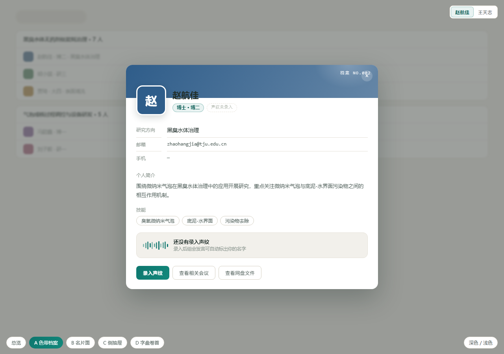
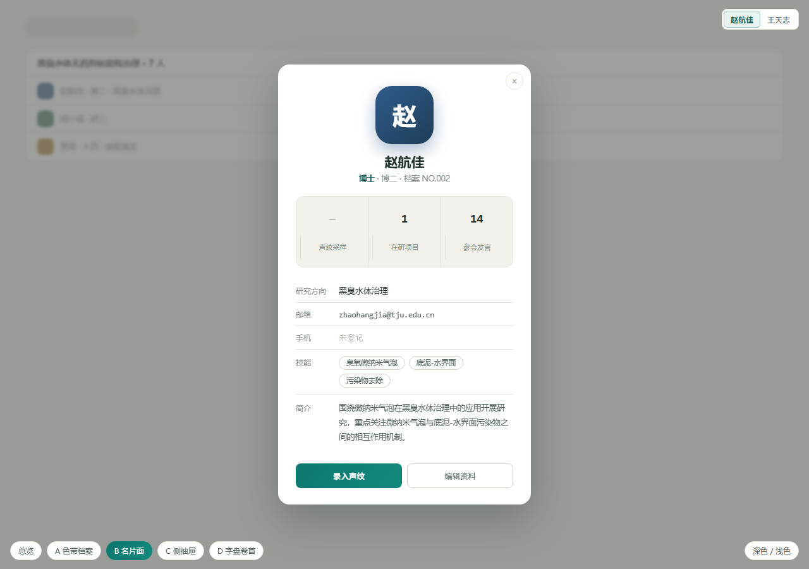
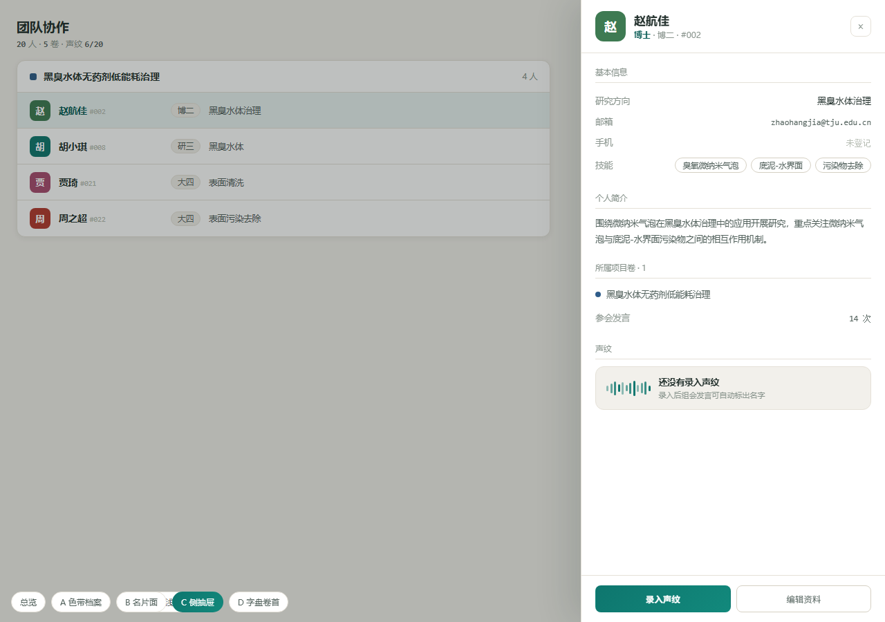
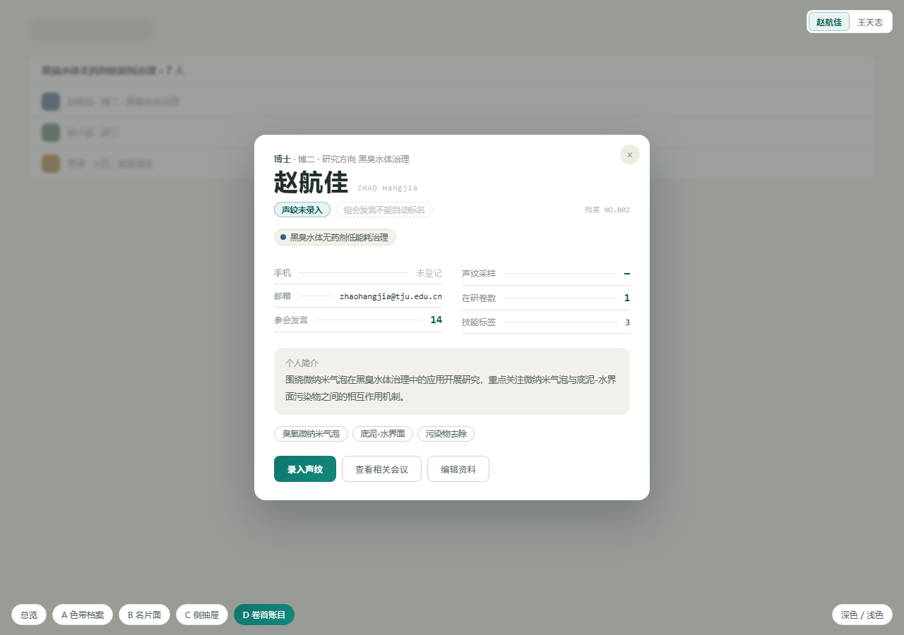

顶部 84px 成员哈希色带 (与名录行头像同色, 弹窗身份 = 列表身份), 头像压住色带下沿, 大姓名直接落在内容上。基本信息紧凑 dl, 简介灰卡, 声纹做成状态块: 波形 + 采样数 + 一句人话说明。信息密度最高、识别性最强, 深色模式色带依然成立。
打开 A 交互稿
窄版居中名片: 大头像 + 姓名 + 称谓一行, 下面三格统计 (声纹采样 / 在研项目 / 参会发言), 再往下明细行。像实验室花名册里翻出来的一张卡片, 最简洁, 但统计两格需要新聚合口径 (参会数) 才有真数据。
打开 B 交互稿
不是弹窗: 从右侧滑出的档案抽屉, 左侧名录保持可见, 分组标题 + 值右对齐。好处是连续看人不用关弹窗, 与网盘右栏档案 rail 同构; 代价是要改 WorkspaceView 的 dialog 交互模型 (el-dialog → el-drawer)。
打开 C 交互稿
去掉头像, 姓名字号就是主角 (34px + 拼音角标), 项目卷用色点 chips 一行带过, 中部两栏账目带点线引导, 大数字用 mono 强调。档案卷首的仪式感最足、最"无人脸"的理性版本; 与名录的哈希头像语言略脱钩。
打开 D 交互稿